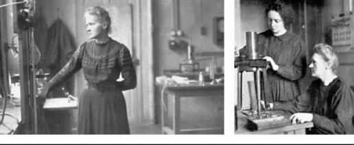
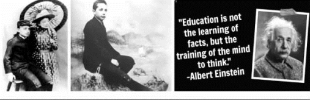
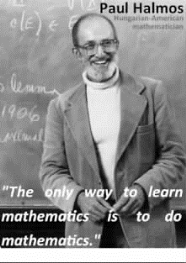
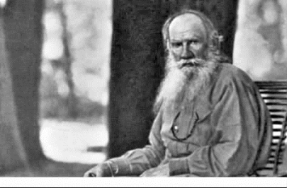
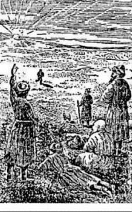
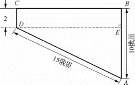
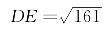
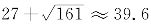
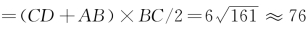
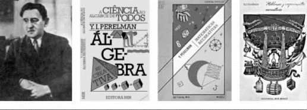

5 给一名害怕几何的学生的信
发展独立思考和独立判断的一般能力，应当始终放在首位，而不应当把获得专业知识放在首位。如果一个人掌握了他的学科的基础理论，并且学会了独立地思考和工作，他必定会找到他自己的道路，而且比起那种主要以获得细节知识为其培训内容的人来，他一定会更好地适应进步和变化。
——爱因斯坦
学习知识不是越多越好，越深越好，而是要服从于应用，要与自己驾驭知识的能力相匹配。
——黄昆
平面几何在初中数学教学中占有重要地位，能够培养学生空间想象能力、逻辑思维能力和论证能力。几何是用一大套定义、公理、定理精心编织的体系，而这些定义、公理、定理是用严谨抽象的语言表达的。可是不少初中生却害怕和厌恶几何学，认为几何抽象深奥、呆板僵化、枯燥乏味。一些学生对于“要有因为，要有所以；由因为怎么到所以”的推理过程不能掌握，进而发展到厌学、弃学。
以下是我和—位小女生讨论学习几何的信。
一名害怕几何的学生的来信
敬爱的李爷爷：
这是一封SOS向您求救的信。我希望能得到您的回信。
我是初中生，正学习几何，我小学时算术还勉强及格，但是不喜欢。
进入中学我越来越怕数学，是不是女生不适合逻辑思考？
我习题常不会做，有时要抄同学的作业，抄了之后还是不大明白，为什么其他同学都比我聪明？
做梦常梦到做不出习题，常常梦到考试时做不出，下课铃就响了。老爷爷，我常常会醒来后冷汗直流。有几次醒来还吓得抽筋。
请教老爷爷给我怎样学好数学的方法，告诉我您的一些秘诀，让我早日脱离这种求生不能求死不得的状况。您真的要给我回信啊！
祝
安康
××敬上
2017．3．8
我很快给她回了信。
××：
收到你的信，我正在赶写我的书以及几篇已经过了截稿日期的论文，由于前段时间我身体不太好，许多工作搁了下来，现在要快马加鞭地工作。本来想过两天才回信给你，但是看到你说是SOS求救信，只好把其他工作搁在一边，先回你的信。
你说的情形，我小时候也经历过。我属于“后知后觉”不聪明的人，小学不会背九九乘法表，很怕算术，常在课堂上不能专心听老师讲课，常常会做白日梦。最可怕的是由于不会抄习题（那个年代，我们都是老老实实，不会抄同学的作业），常常作业写不完要被老师处罚。
我们生活的那个年代，老师可以用藤条打人，我常被打得失禁，裤子尿湿，真是丢人。
这些伤害，仍残留在脑际里。现在年纪大了，有时做梦，梦到小学上课，竟然是在考场上面对数学考卷不知怎么做，心里焦急，而考试时间结束，铃声大响，吓得醒过来。
我是属于数学特困生，进入初中第一学期我们班上算术课，我仍旧是“一做就错”的学生。我的班主任老师谭老师教华文和数学，非常认真，而且把她的藏书全放在课堂一个小书橱里让我们阅读。我很喜欢她，可是觉得真对不起她：我的数学学不好。
在第一学期考完试后，我向她借了三本数学课外读物，重新温习小学的数学，必须重新打好数学基础，经过一个月假期的努力，终于提高了理解及做题的能力，一看就懂，结束了“一看不会，一做就错”的情况。在第二学期，全校比赛还得了第一名，从此不再是学困生了。
因此我认为你现在的情形是可以改变的，要对自己有信心，也要花一点力气艰苦学习，你一定能改变目前的状况。
“我们的生活都不容易，但是，那有什么关系？我们必须有恒心，尤其要有自信心！我们必须相信我们的天赋是要用来做某种事情的，无论代价多么大，这种事情必须做到。”
天生我才必有用，不要认为自己笨。要对自己有信心，你一定要克服落后状况。我上面引的话是居里夫人说的。
我毕业后曾在一所女中当了两个月临时教员，这是一所乡村学校，学生平时要做家务，大部分学生成绩不好，而许多老师也不想好好教书，只想混日子，学生的习题也不批改。
我被分配在成绩最差的班上教几何，看到学生上课昏昏沉沉，没有读书的兴趣，我想改变这种状况，我设法不照课本的进度，宁可慢些，把一些抽象的定理结合实际情形来叙述，并且向他们讲我怎样从学困生转变成一个优等生的故事。而且放学后留在教师办公室把学生的习题一一详细地批改，不是像一些老师，只是签一个“阅”就了事。
一个月后大部分学生建立了信心，而且渐渐开窍，懂得怎样做题。有一天放学，我留在教室改卷子没有回家。有一个成绩差的女生，跑来要我帮她弄懂一个定理，并且之后要我出一题让她解。她平时有些自卑，看到她敢向前迈进挑战自己，我心里很高兴。
最初二十分钟，她不知道怎样解，我本来可以直接提示她，这样她就可以很快解决，但是一想这对她不是很好的帮助，应该让她独立学会怎样解决困难，因此我只说：“不要焦急，你一定会而且能解决，你只要坚持一下，胜利就在前方。”
半个钟头之后，她终于发现关键的地方，轻而易举地解决了。她高兴得哭起来，而我也激动地流下眼泪。我说：“你已经由一只丑小鸭变成白天鹅了。”

居里夫人和女儿
这段经历使我以后想成为数学老师，希望能帮助更多后进的学生。
你说女生不适合逻辑思考，这是不正确的。由于人类社会由母系社会变为父系社会，女性的才智受到社会的压制，长期只能做生儿育女、服侍男人的工作，被剥夺了发挥她们才智的机会。
事实上历史上曾出现过许多卓越的女数学家、科学家，她们的工作真的是“惊天地，泣鬼神”，不逊色于男生。所以请不要小看自己。
我这里给你两张居里夫人的相片，是我青年时去巴黎时居里夫人创办的镭学研究院的主任（他是居里夫人的学生）赠送给我的。还有一本日本人编的有一千道题的《几何词典》（长泽龟之助著），希望对你学习几何有帮助。
祝学业进步
学数
3/10/17
收到我的信后，小女生很快又来了一封信。
敬爱的李爷爷：
谢谢您送我的珍贵的居里夫人照片和书。
我在学习几何上还是有问题，我试着思考，但仍然不会做习题。我还是有些心灰意冷。
究竟学习几何有什么用？
有没有好方法改善我的处境？
如果您有时间是否可以回答这两个问题？
敬祝
健康
×× 2017年3月14日
××：
我想讲两个故事，一个是发现毕达哥拉斯定理的毕达哥拉斯和他不喜欢几何的学生的故事。另一个是喜欢几何的爱因斯坦的故事。
你知道我们说的勾股定理是毕达哥拉斯发现的。他有一个学生不喜欢学几何，觉得很难很无趣，毕达哥拉斯想要改变他的想法，就对他说：“如果你肯听我讲一个几何定理，我给你一个银币。”这个学生很穷，听到老师要给他钱，就马上答应了，于是他每天听老师给他讲一个几何定理，听完之后很高兴地从老师手里拿了一个银币。
过一段时间后，他对几何的观点改变了，而且觉得越来越有兴趣，他不满足老师每天只讲一个几何问题，于是央求毕达哥拉斯是否能多讲一些。
这时毕达哥拉斯说：“可以，但是我要多教一个定理，你要给我一个银币。”这个学生为了要知道更多的几何知识只好忍痛答应。不长的时间，毕达哥拉斯把他给学生的银币都收回来了。
爱因斯坦是德裔伟大的物理学家。在1889年他10岁时，他家的朋友马克斯·塔尔穆德（Max Talmud）给他带来一本欧几里得的《几何原本》，他近乎狂热地喜欢上了这本有两千多年历史的几何书。他从书中了解了演绎推理。根据他的妹妹玛雅回忆，爱因斯坦12岁时独立发现了毕达哥拉斯定理的证明，16岁自学了解析几何和微积分。
爱因斯坦在《自述片断》中曾说：“在12岁时……有位叔叔曾经把毕达哥拉斯定理告诉了我。经过艰苦努力以后，我根据三角形相似性成功地‘证明了’这条定理；在这样做的时候，我觉得，直角三角形各个边的关系‘显然’完全决定于它的一个锐角。在我看来，只有在类似方式中不是表现得很‘显然’的东西，才需要证明。”
爱因斯坦继女的丈夫鲁道夫·凯斯（Rudolph Kayes，1889—1964）是一位德语专家，1930年出版了《爱因斯坦传》一书，书中介绍爱因斯坦证明毕氏定理一事时写道：“他的叔叔向他讲了毕氏定理，只讲了内容，而未讲证明。这个孩子的雄心大志是借助现有的最少的几何知识，去发现他自己的证明。奇迹终于发生了……他独立地成功证明了欧几里得几何的关键定理……当施皮克尔（T．Spieker）的几何书到了他手里时，除了两三道难题外，他迅速成功地解答了所有的习题。”
学习几何是有用的，我打算在之后的书里介绍这方面的知识。

爱因斯坦和妹妹玛雅
我由于还有事情要做，只能回答比较重要的问题：“怎样学好几何？”我知道你现在是“举步维艰”，但是我仍然希望你能“知难而上”！

哈尔莫斯
美国数学家哈尔莫斯（Paul Halmos）说：“学数学的唯一方法是做数学。”是的，你需要做一些练习题才能熟悉一些证明的技巧，自主探索是学好数学的重要方法。几何美丽的地方，命题不只是有一个证明，常常有许多不同的证明。只要能孜孜以求，锲而不舍，你一定会达到成功。你可以试试用不同的证法去解决同一问题，而且可以的话，把你发现的其他结果告诉其他同学，这样你就可以通过学习分享知识，加深你对几何的认识。
这里引两句爱因斯坦的话：“要记住，你们在学校里所学到的那些奇妙的东西，都是多少代人的工作成绩，都是由世界上各个国家里的人热忱的努力和无尽的劳动所产生的。这一切都作为遗产交到你们手里，使你们可以领受它，尊重它，增进它，并且有朝一日又忠实地转交给你们的孩子们。这样。我们这些总要死的人，就在我们共同创造的不朽事物中得到了永生。”
“发展独立思考和独立判断的一般能力，应当始终放在首位，而不应当把获得专业知识放在首位。如果一个人掌握了他的学科的基础理论，并且学会了独立地思考和工作，他必定会找到他自己的道路，而且比起那种主要以获得细节知识为其培训内容的人来，他一定会更好地适应进步和变化。”
夜已深，我很疲倦，不想写了，希望这信对你有一点帮助。
祝学习进步！
学数 2017年3月16日
从托尔斯泰的一篇小说看几何的用处
之后，我又写了一封信。
××：
有一位19世纪俄国作家的作品是我很喜欢的，列夫·托尔斯泰（Lev Nikolayevich Tolstoy，1828—1910）是俄国贵族——世袭的伯爵，年轻时曾经过着醉生梦死的荒唐生活，但晚年作风改变，成为“俄罗斯的圣人”。他解放了自己农庄的农奴，为农民子弟办学校，为农民盖房子，反对暴力革命，遭到当局和教会的迫害。

列夫·托尔斯泰
俄国在1898年发生饥荒，他写文章说：“人民之所以饥饿，是由于我们吃得太饱。”提出应该“从人民的脖子上爬下来”，把土地归还给他们。
他喜欢中国的文化，翻译老子的《道德经》，介绍孔子的儒家思想，写文赞扬“中国人是世界上最爱好和平的民族，他们不想占有别人的东西，他们也不好战”。因此当1900年八国联军攻陷天津、北京屠杀中国人民时，他写出文章《不准杀戮》，对军国主义者的杀烧抢掠提出严正抗议。托尔斯泰和列宁先后在喀山大学读书。列宁这样评价托尔斯泰：“天才的艺术家，创造了无与伦比的俄国生活图景……他的作品、观点、学说、学派中的矛盾是显著的……千百万农民的抗议和他们的绝望就是融合在托尔斯泰学说中的东西。”
我在中学时从苏联科普作家别莱利曼（Yakov Perelman，1882—1942）的《趣味几何》一书中读到托尔斯泰在一篇短篇小说《一个人需要多少土地？》中提出的一个几何问题：一个农民巴霍姆，希望有更多的土地，由于贪得无厌而累死。

别莱利曼的《趣味几何》里的插图
这是发生在西西伯利亚地区的故事：有一个叫巴霍姆的人到草原上去购买土地，卖地的酋长出了一个非常奇怪的地价“每天1 000卢布”，意思是谁出1 000卢布，只要他日出时从规定地点出发，日落前返回出发点，所走过的路线圈起的土地就全部归他。如果不行，这1 000卢布就归于卖主。
巴霍姆觉得这个条件对自己有利，便付了1 000卢布。第二天天刚亮，他就连忙在草原上大步向前走去。他走了足足有10俄里（1俄里≈1．066 8千米），才朝左拐弯；接着又走了许久，才再向左拐弯；这样又走了2俄里，这时他发现天色不早，而自己离出发点还足有15俄里的路程，于是只得改变方向，径直朝出发点奔去……最后，他总算如期赶到了出发点，却因过度劳累，口吐鲜血而死。请你算一算，巴霍姆这一天走了多少俄里路？他走过的路线围成的土地面积有多大？
巴霍姆是这样走的（如图所示）：

巴霍姆的行走路线
根据题意你可以看出他走过的路线是一个直角梯形：
AB ＝10，∠B ＝90°，∠C＝90°，CD ＝2，DA ＝15
过D 作DE⊥AB，则AE ＝10－2＝8，运用勾股定理求出：

所以他一天共走了

俄里。可以算出面积是

平方俄里。如果他有几何知识，知道一条封闭曲线围出最大面积的是圆。以他走一天的路径是一个圆圈39．6 俄里，他可以圈成土地125．3平方俄里，比梯形多许多。
我在这里是说，懂一点几何知识还是好的。这里送你一本别莱利曼的《趣味几何》的书及托尔斯泰《一个人需要多少土地？》，希望对你认识数学的用处有点帮助。
祝好好学习和进步！
学数 2017．3．17
敬爱的学数爷爷：
很高兴收到您的珍贵电子版书《趣味几何》，我给了班上几位和我同样几何不好的同学，她们都很高兴，要我谢谢您。
您讲的托尔斯泰的故事，真的是有趣，贪心是会害死人。
我是后进生，功课又重，但我会想办法阅读托尔斯泰的著作。
我希望能多得到您的信和教导。
多保重！
××
2017．3．18
××：
很高兴你喜欢别莱利曼的书。我就是读他的一本书而改变对数学的恐惧及枯燥的错误看法。很可惜他在1942年德国军队围攻列宁格勒，由于饥饿，器官衰竭，活活饿死，年龄才59岁。他死于1942年3月16日，屈指算来今年刚好是他离开人世75周年。但他留下的著作，今天俄罗斯、法国、美国、中国仍在出版，超过千万册，影响很大。我这里送给你一张他的相片。

别莱利曼和他的趣味数学书
我想你会很快就赶上去，只要你对自己有信心。
我现在身体不行，没有胃口不能吃东西，没有体力做持久的写作，但是我希望能在三个月的时间写一本专门对数学害怕的小朋友的故事书，通过趣味故事让他们喜爱数学。
欢迎你与我联系，坦白讲你的喜怒哀乐，我真诚地祝愿你
学习进步！
学数 2017．3．24
附注：1．托尔斯泰是一个有良知的作家。他年轻时读法国思想家卢梭的书，因此具有同情底层人民的思想。后来受到基督教耶稣的事迹的感动——衷心服侍别人和非暴力的思想。他写《一个人需要多少土地？》的小说，主要是对“马太福音”里耶稣说的话“人如果赚得全世界，而没有生命，那有什么意义”的发挥。
2．第二次世界大战期间，德国希特勒军队围攻列宁格勒872天，导致该城饿死、冻死或炸死人数竟然达到117万。该城直到1943年1月18日才被解围。